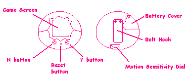
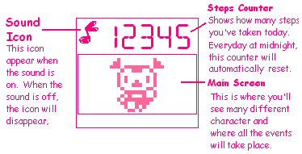
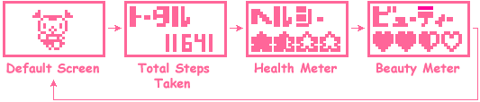
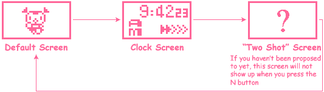

<HTML><BODY>
<CENTER>
<TABLE WIDTH=640 BACKGROUND="header.gif">
<TR><TD HEIGHT=82>&nbsp &nbsp<A HREF="index.html"></A></TD></TR></TABLE>
</BODY></HTML><HTML>
  <HEAD>
   <TITLE>Arukotchi translated!</TITLE>
   <LINK REL=stylesheet HREF="styles.css" TYPE="text/css">
  </HEAD>
  <BODY BACKGROUND="stars.gif" bgproperties="fixed">
    <CENTER>
    <TABLE WIDTH=640 BACKGROUND="aru/aru_back.gif" BORDER=2px BORDERCOLOR="#669966">
     <TR><TD>
  <BR><BR>
  <CENTER></CENTER>
<BLOCKQUOTE> <B>N button</B><BR>
  <DIV>Use this when you want to say "no" during an event.  This button will also bring up the clock screen.</DIV>
  <B>Y button</B><BR>
  <DIV>Use this when you want to say "yes" during an event.  This button will also bring up the "total steps walked" screen, the health meter and the beauty meter.</DIV>
  <B>Motion Sensitivity Dial</B><BR>
<DIV>  Use this dial to increase or decrease the unit's sensitivity to movement.</BLOCKQUOTE></DIV>
  <TABLE BORDER=1 ALIGN=center>
    <TR>
      <TD BGCOLOR="#ff6699"><FONT COLOR="#FFFFFF" SIZE=2><B>After about 2 minutes, the screen will blank out.</B></TD>
      <TD BGCOLOR="#ffffff"><FONT SIZE=2 COLOR="#ff6699">If you don't press any buttons on "Deai Hakken!! Arukotchi", the screen will automatically blank out after about 2 minutes.  To see Arukotchi on the screen again, press the Y or N buttons.  Even while the screen is blanked out, your steps will still be counted.  If an even happens while the screen is blanked out, the unit will beep.  Press a button to find out what Arukotchi is doing!</TD>
    </TR>
  </TABLE>
 <BR><BR>
  <BR><BR>
  <CENTER></CENTER>
<BR><BR>
 <BLOCKQUOTE><B>Turning the sound on and off</B><BR><DIV>
  In main screen mode, press the Y and N button simultaneously to turn off the sound.  The term 'main screen'will be used to describe the default view of Arukotchi walking.</DIV></BLOCKQUOTE>
  <BR><BR>
  <TABLE BORDER=1 ALIGN="center">
    <TR>
      <TD><FONT  COLOR="ff6699"><CENTER><B>Setting the total steps count to 0</B></TD>
    </TR>
    <TR>
      <TD><DIV>From the main screen, press the Y button to show the total steps screen.  From there, push the N button, press the N button once more to select "Count Clear" and then the Y button to reset your total steps to 0. [Note:the top option is cancel. If you've gotten into this screen by accident and don't want to reset your total counts, make sure you've got the arrow on the top selection and then press the Y button.]
      <BR><CENTER></TD>
    </TR>
  </TABLE>
 <BR>
<H4>The different screen modes</H4>
  <BR>
  <CENTER>
  
  </CENTER>
  <BR><BR>
  <BR>
  <CENTER>
  
  <BR><BR>
  <TABLE BORDER=1>
    <TR>
      <TD BGCOLOR="#ff6699"><FONT SIZE=2  COLOR="FFFFFF"><B>Exactly what are the health and beauty meters?</TD>
      <TD BGCOLOR="#ffffff"><FONT SIZE=2 COLOR="ff6699">The health meter measures how fit Arukotchi is.  Her degree of fitness will depend on how much you walk with her.  If you don't walk a lot, she won't be as healthy.  The beauty meter measures how pretty Arukotchi is.  This rating will vary as Arukotchi finds items - some will decrease her beauty, others will increase it.</TD>
    </TR>
  </TABLE>
  <BR>
  <A HREF="arukotchi.html"></A> <A HREF="arukotchi3.html"></A>
  </TD>
   </TR>
  </TABLE>
 </BODY>
</HTML>
<HTML><BODY>
<CENTER>
<TABLE WIDTH=640 BACKGROUND="footer.gif">
<TR><TD HEIGHT=58><CENTER><A HREF="index.html"></A></TD></TR></TABLE>
</BODY></HTML>
